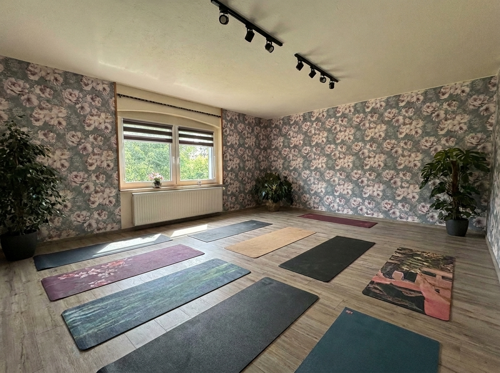
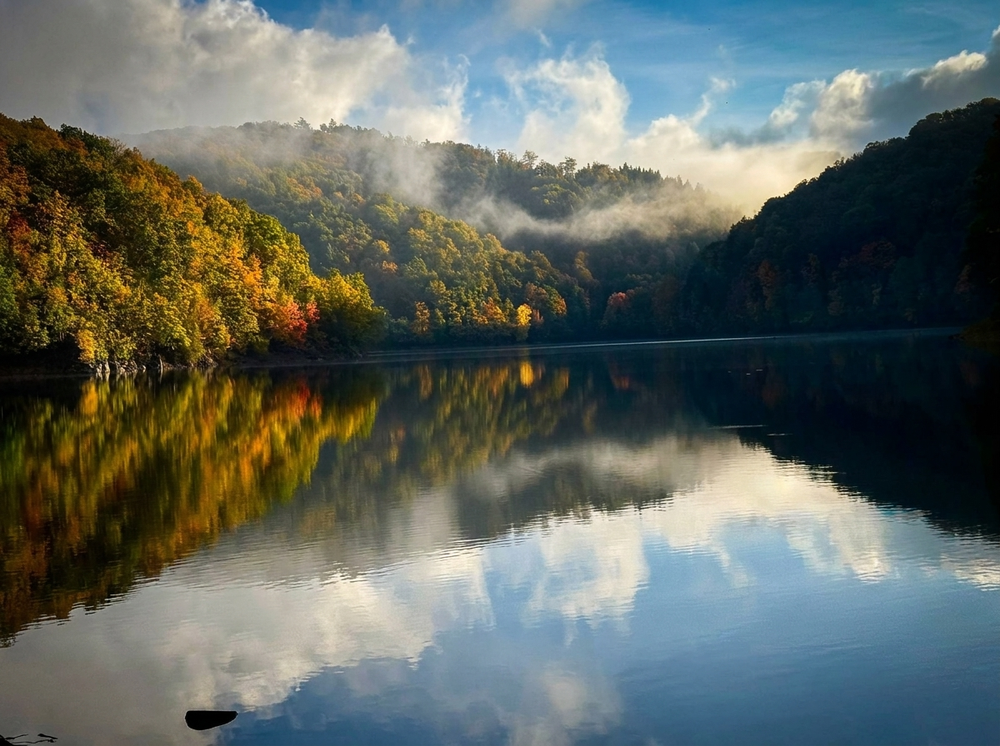
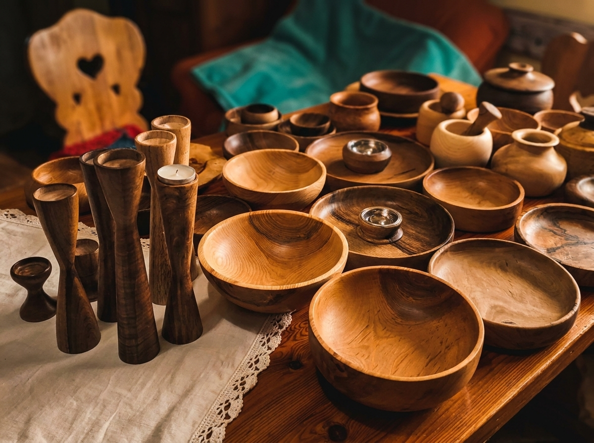
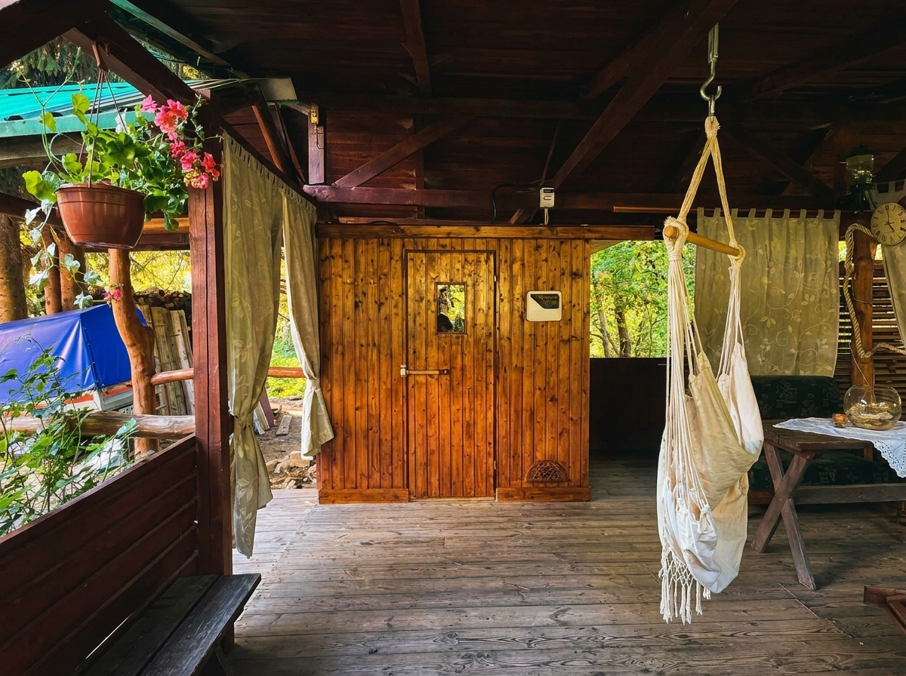
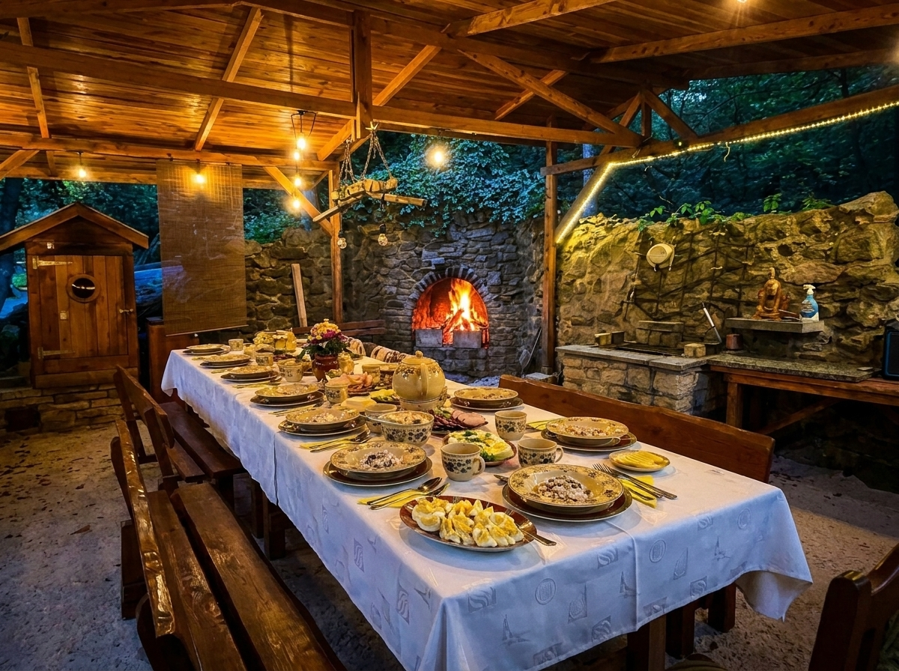
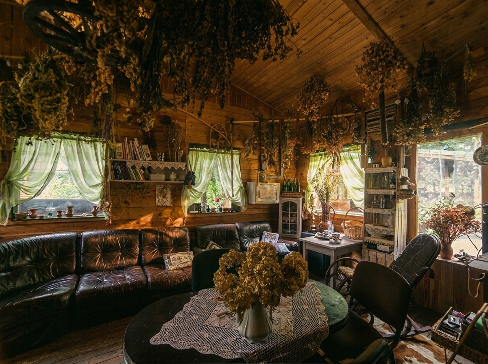

3 dni w kameralnej grupie do 8 osób. Sauna nad zimną rzeką, autorskie napary ziołowe, joga i medytacja na miejscu, rzemiosło stolarskie oraz tradycyjna kuchnia gospodarska.
Większość wyjazdów agroturystycznych kończy się biernością i wieczornym alkoholem. Od-Nowa powstała po to, by dać alternatywę – wyjazd w Góry Sowie, z którego wracasz z pełną dawką naturalnej energii i wyciszenia.
Wszystko odbywa się na miejscu: duży, jasny pokój do jogi i medytacji, sauna ziołowa nad chłodnym potokiem, wiata z kociołkiem na ogniu oraz warsztat rzemieślniczy.
Wszystkie atrakcje są zaplanowane płynnie w kameralnej grupie do 8 osób.

Ruch & CiałoPoranne i wieczorne praktyki ukierunkowane na głęboką relaksację mięśni i uelastycznienie kręgosłupa.

WyciszenieTrening uważności i uziemienia pozwalający wyciszyć natłok myśli i odzyskać spokój ducha.

RzemiosłoRęczna obróbka dębowego drewna pod wiatą. Uczysz się szlifowania, fakturowania i olejowania.

ŻywiołySesje saunowe połączone z zanurzeniem w zimnej leśnej rzece tuż obok. Potężny reset układu nerwowego i odporności.

WyżywienieZdrowe, domowe posiłki 100% wegetariańskie przygotowywane ze świeżych wiejskich produktów, ziół i sudeckich przetworów.

Zielarstwo & NaturaRozpoznawanie lokalnych słowiańskich ziół, nauka suszenia, mieszania i przygotowywania autorskich naparów regeneracyjnych.
Przejrzyste warunki bez ukrytych opłat za 3-dniowy turnus w Górach Sowich.
Kameralna grupa max 8 osób. Pełne wyżywienie wegetariańskie, 2 noclegi oraz wszystkie warsztaty rzemieślnicze w cenie.
Świeże wiejskie pieczywo, swojskie sery, warzywa, przetwory & napary (100% Wegetariańskie)
Ciepłe autorskie dania kociołkowe & pierogi
Kawa, zioła & domowa przekąska
Przemyślany plan dla grupy do 8 osób – spokojny rytm bez pośpiechu.
Powitalne napary ziołowe, zakwaterowanie w pokojach i czas na złapanie oddechu po podróży.
Regenerujący spacer leśną ścieżką w Michałkowej na powitanie z naturą Gór Sowich.
Wspólny posiłek pod wiatą oraz wieczorna ceremonia przy ogniu.
Opcjonalna prowadzona sesja medytacji na dobry sen.
Praktyka uziemiającego oddechu oraz relaksacyjne skanowanie ciała.
Rozgrzewająca i rozluźniająca sesja jogi w pokoju praktyki na miejscu.
Świeże wiejskie pieczywo, swojskie sery, warzywa i autorskie napary ziołowe.
Podgrupa A: Stolarka pod wiatą | Podgrupa B: Warsztaty Zielarskie.
Spokojna leśna wędrówka sprzyjająca wyciszeniu i uważności.
Podgrupa A: Warsztaty Zielarskie | Podgrupa B: Stolarka pod wiatą.
Wspólne tworzenie tradycyjnych potraw gospodarskich i uroczysty posiłek.
Gorąca sauna ziołowa z leśnym potokiem oraz kąpiel w ciepłej balii pod gwiazdami.
Wieczorne spotkanie przy ogniu z uważną medytacją w blasku płomieni.
Sesja medytacji i wyciszenia w pokoju praktyki.
Rozbudzenie ciała i relaksacja na koniec wyjazdu.
Wspólny posiłek śniadaniowy na świeżym powietrzu.
Odpoczynek na hamakach przy ziołowej herbacie, wystawa własnoręcznych prac i sesja pamiątkowa.
Lokalny poczęstunek oraz czas na rozmowy i pamiątkowe zdjęcia przed wyjazdem.
Zwieńczenie turnusu przy ogniu i wręczenie pamiątek ze wspólnego wyjazdu.
Wyślij formularz, a skontaktujemy się z Tobą w ciągu 24h z potwierdzeniem i szczegółami rezerwacji.